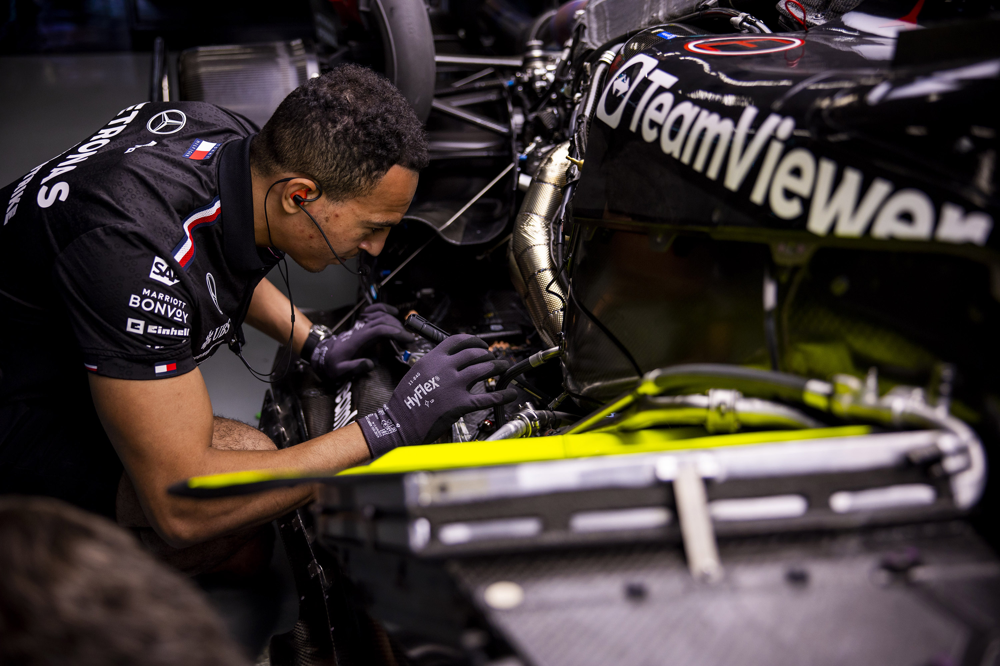

Práctica1
Segundo ejercicio realizado sobre la eleccion de futuros trabajos o carreras universitarias.
Ver másEncuentra tu próximo camino
Elegir qué estudiar después de Bachillerato es una decisión importante. Por eso, en esta web podrás descubrir y comparar tres grados universitarios, conocer sus características y explorar las diferentes oportunidades profesionales que ofrecen.